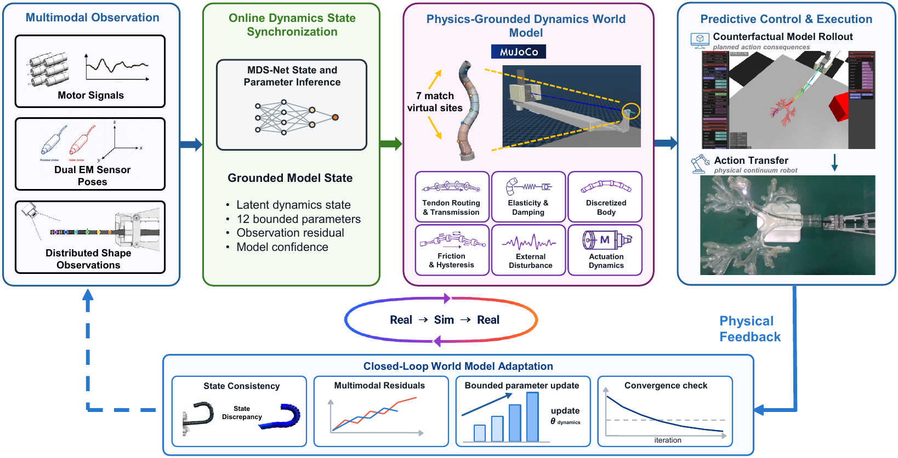
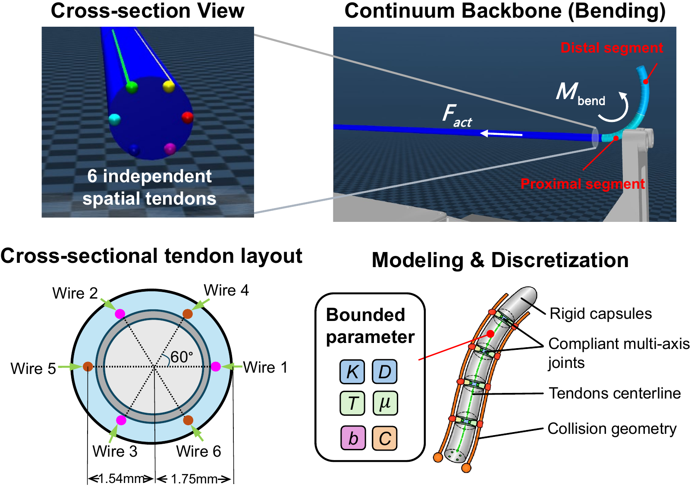
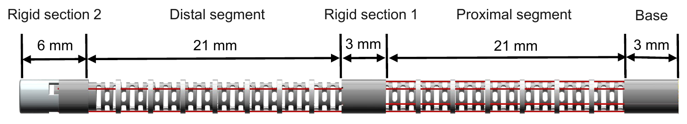
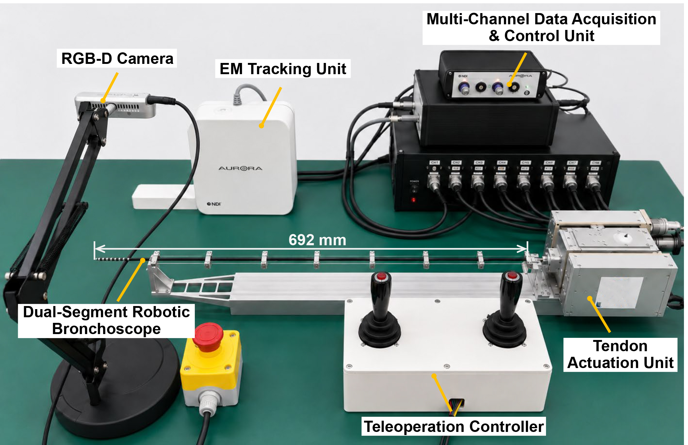
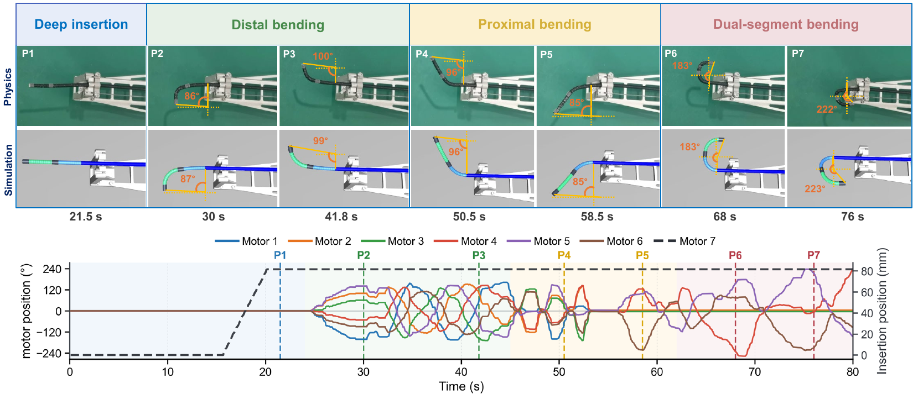
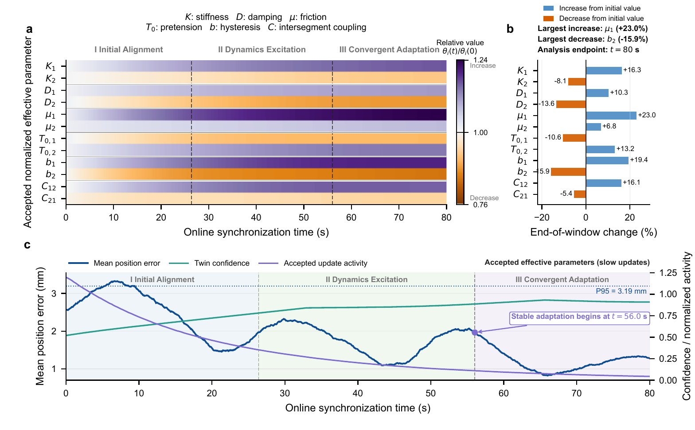
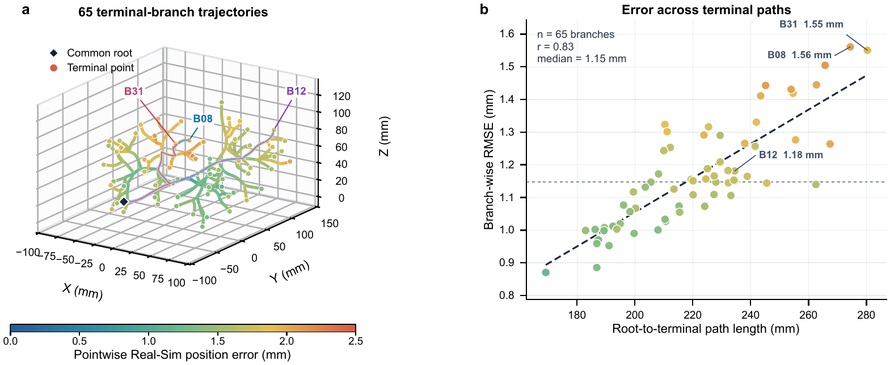
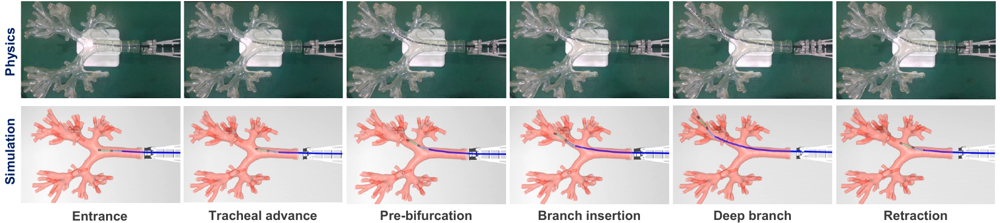

OVERVIEW / 01:27
The complete research story
Modeling, online grounding, comparison, and airway navigation.
BRONCHOTWIN IN MOTION
01 / 08 The complete research story
ICRA MANUSCRIPT IN PREPARATION / INTERACTIVE PROJECT PAGE
A physics-grounded MuJoCo twin that preserves measured mechanics while adapting its action-response dynamics from multimodal physical observations.
Dual-Segment Robotic Bronchoscope Research Platform
Ground the dynamics. Predict the response. Execute with confidence.
INTERACTIVE DEMO
Drag either compass to command the two bending segments, then use the insertion slider to advance the robot. When enabled, the non-convex airway wall rejects commands that would deepen penetration while preserving inward motion and retraction.
The first launch downloads MuJoCo WebAssembly and the full airway model.
Interactive MuJoCo twin. The browser scene is generated from the complete desktop MJCF: base mechanism, 577 mm insertion stage, passive conduit, two active segments, six routed tendons, tip camera, and rigid non-convex airway collision geometry. The airway mesh bounds the lumen and prevents the continuum robot from crossing the inner wall.
OVERVIEW
A mechanically explicit twin is continuously grounded by multimodal observations, then used to evaluate actions before physical execution.
Safe autonomous pulmonary intervention requires a world model that remains mechanically interpretable while tracking changes in tendon transmission. BronchoTwin combines a measured dual-segment MuJoCo model with distributed shape observations, two EM poses, motor feedback, and command history. MDS-Net estimates curvature, bounded effective parameters, residuals, and confidence; accepted updates progressively align the twin for short-horizon prediction, state-dependent decoupling, and command transfer.

Measured geometry and tendon topology remain explicit in MuJoCo.
MDS-Net aligns shape, EM poses, motors, and delayed commands.
Grounded response maps support rollout, transfer, and physical control.
METHOD
The model preserves the physical transmission architecture while updating only a compact, interpretable dynamics state.
Two compliant 21 mm segments, six routed tendons, rigid transitions, airway contact, and linear insertion are represented directly. Distal tendons traverse the proximal segment, preserving configuration-dependent coupling.


Seven motor drives, tendon sensing, two EM probes, RGB-D vision, distributed shape markers, and the transparent airway phantom are synchronized for grounding and model-mediated visual servoing.


RESULTS
Error falls as synchronization confidence rises, while branch-wise consistency is retained across 65 terminal airway paths.



The grounded twin stays close enough to the physical robot to support action-conditioned prediction and command transfer.
PAPER AND CODE
The associated ICRA manuscript is in preparation and has not yet been published. The title, author list, preprint, and citation record will be updated when the manuscript is made public. The repository currently provides the complete research software, MuJoCo model, control modules, and browser simulation.